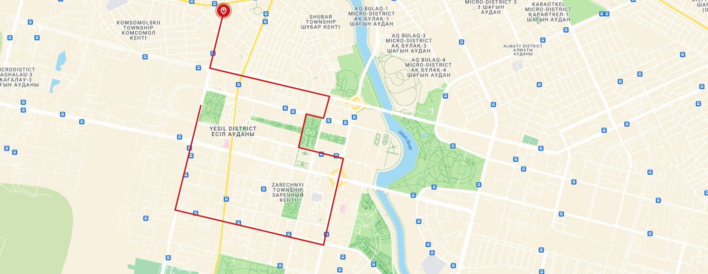

Расписание Red Bus
График
c 09:00 до 22:00
Начало ТЦ «AiLand»
09:00
Длительность маршрута
2 часа
Как добраться к точке отправки?
Каждая экскурсия начинается возле развлекательного центра «AiLand» возле ТРЦ «Keruen City». Поскольку он находится в самом центре города, к нему можно пройтись пешком или приехать на такси. Ближайшая остановка общественного транспорта — ТЦ «AiLand».
Об экскурсионных турах RedBus в Астане
Такой тип отдыха подойдет не только туристам, которые хотят за короткое время осмотреть все локальные достопримечательности и архитектурные памятники, но и для местных жителей. Экскурсия на комфортабельном двухэтажном автобусе с кондиционером позволяет воочию увидеть:
- Торгово-развлекательный центр «Хан Шатыр»;
- Монумент «Триумфальная арка»;
- Торгово-развлекательный центр «Mega Silk Way»;
- Национальный историко-краеведческий музей Казахстана;
- Монумент «Астана-Байтерек».
Карта маршрута
